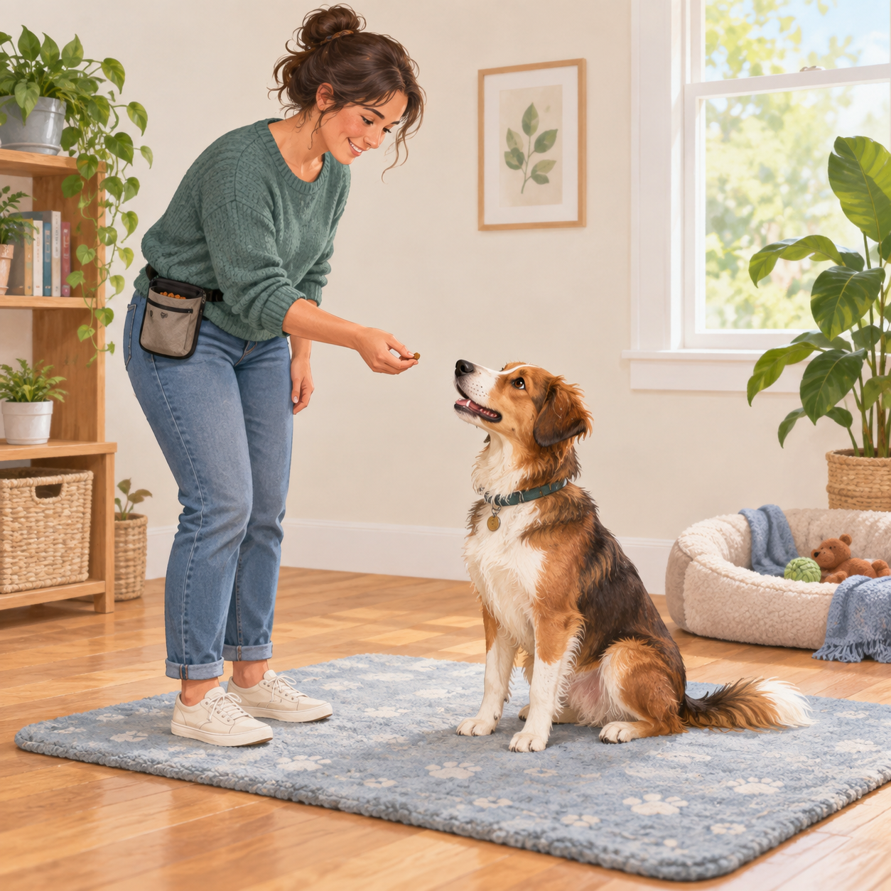
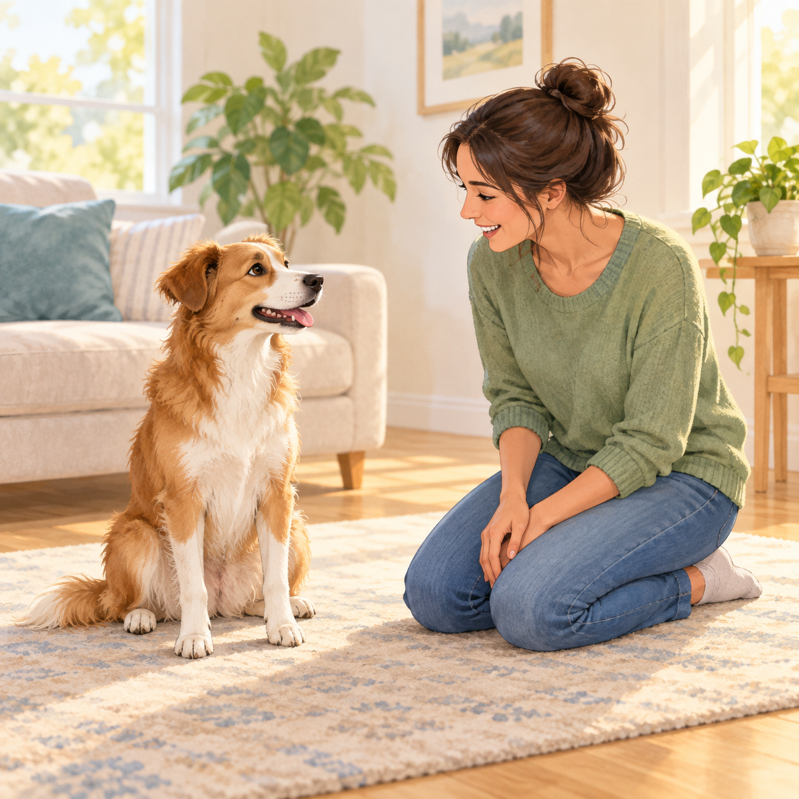
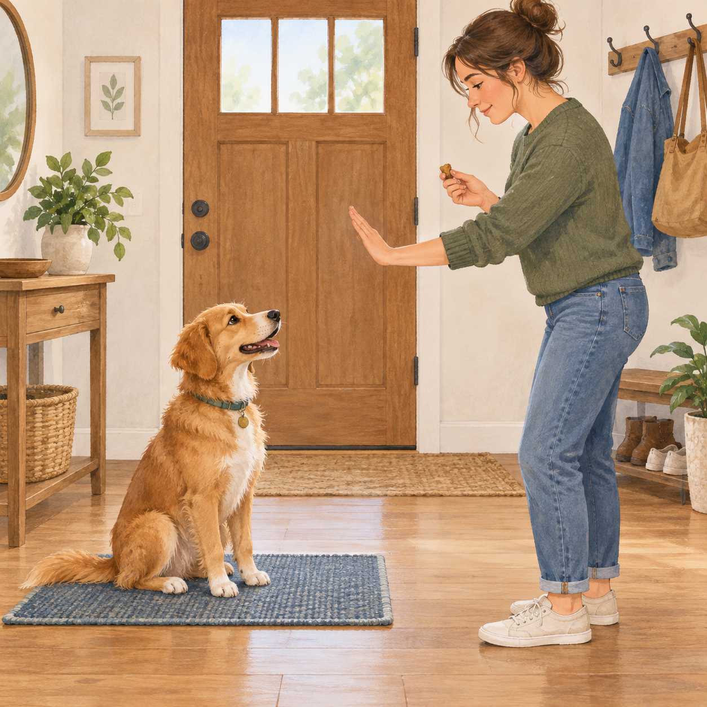
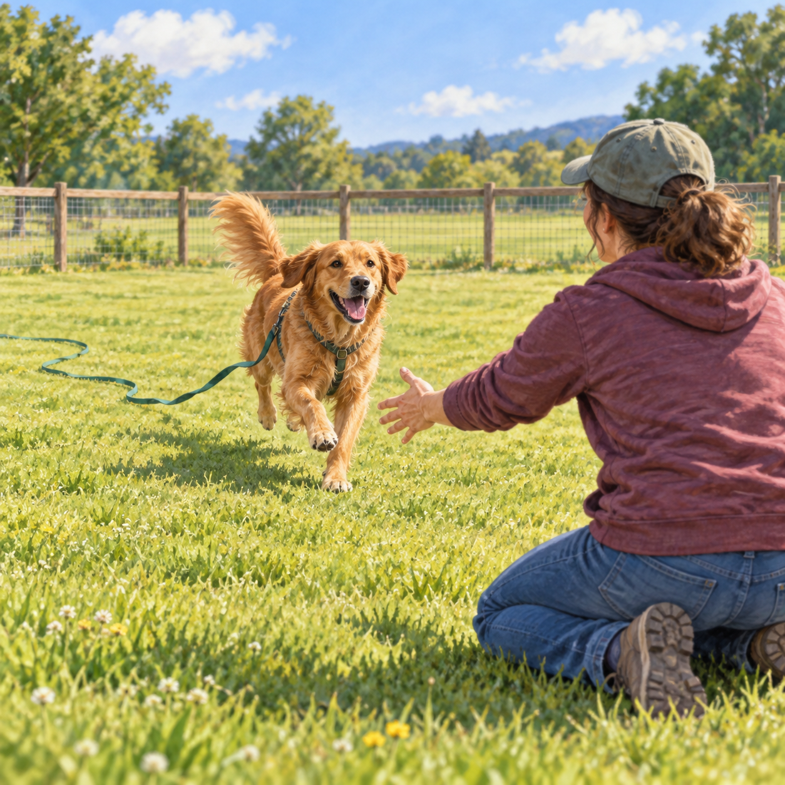
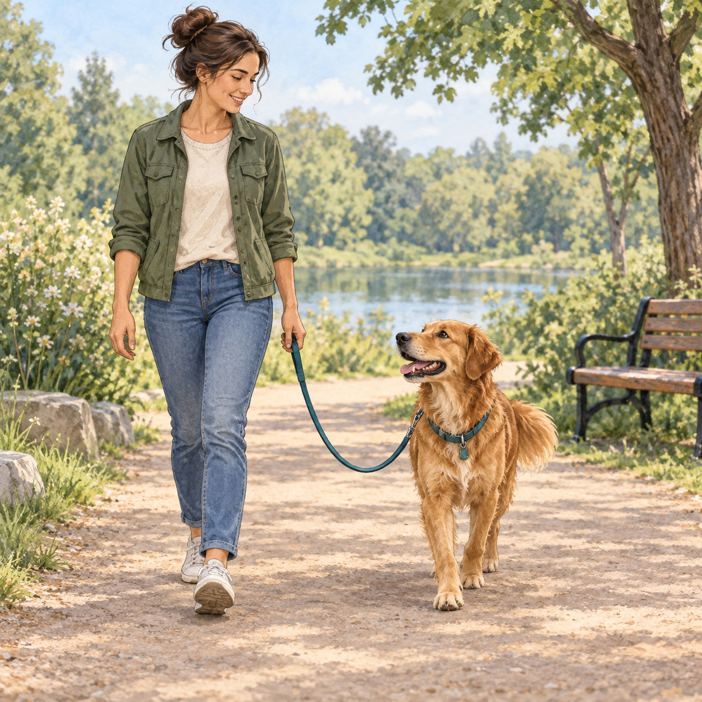
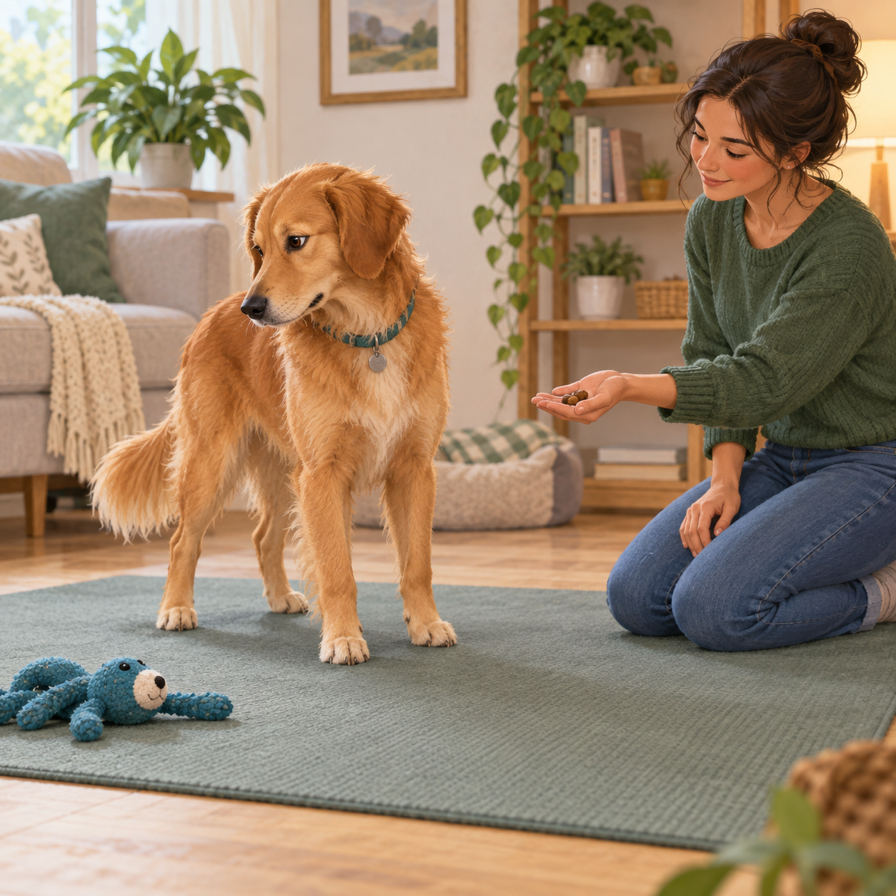
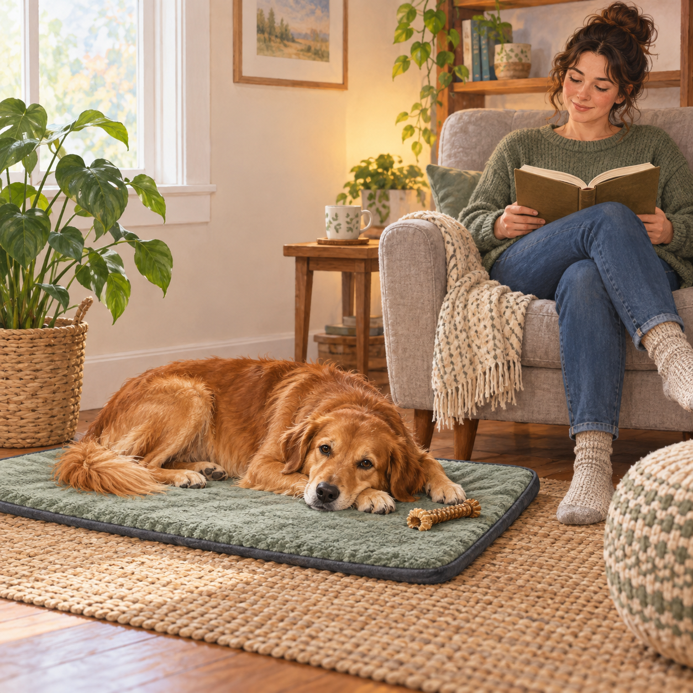
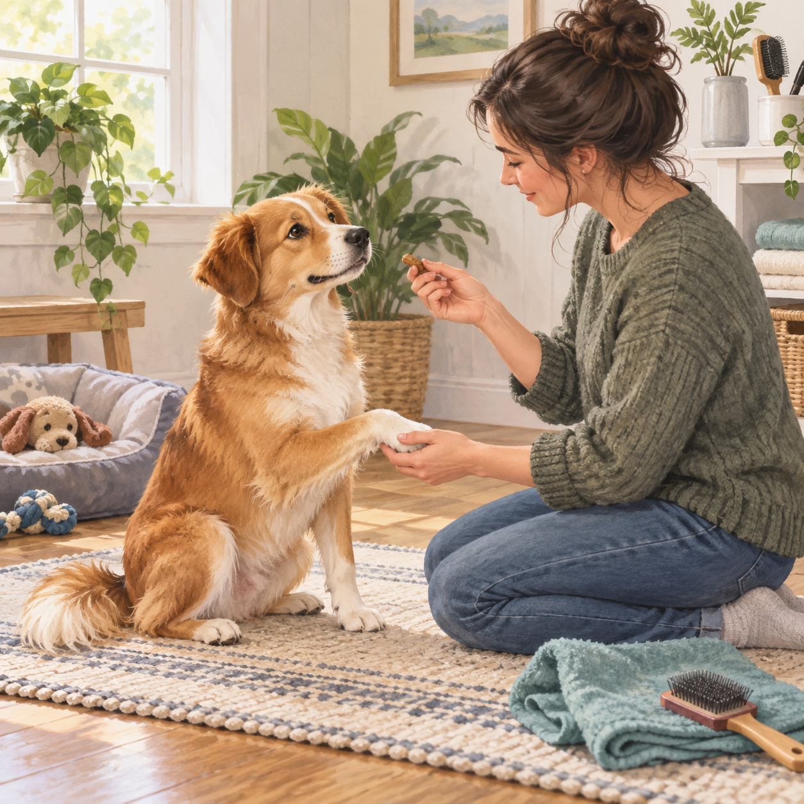

Start with rewards
Use food, play, praise, or access to something your dog loves to make learning feel worth it.
Try: Mark the moment your dog gets it, then reward right away.
Remember: Reinforcement is information, not bribery.

Name & attention
Teach your dog that their name predicts something good and an easy chance to reconnect.
Try: Say the name once, then reward the first glance or head turn.
Remember: Do not repeat the name until it becomes background noise.

Sit & wait
Build a pause with tiny steps, then add distance, duration, and distractions one at a time.
Try: Reward staying still before asking for more.
Remember: Release your dog clearly so waiting does not feel endless.

Come when called
Recall should feel like an invitation back to safety, not the end of every good thing.
Try: Practice close, celebrate generously, and use a long line in open spaces.
Remember: Never call your dog into a punishment or scary situation.

Loose-leash walking
Teach your dog that staying near you keeps the walk moving and interesting.
Try: Reward slack leash and check-ins before the leash goes tight.
Remember: Sniff breaks are part of a good walk, not a failure.

Leave it & drop it
Teach a calm trade so your dog can move away from unsafe items without a chase.
Try: Offer something better from an open hand, then return to the game.
Remember: Do not pry objects from a worried dog’s mouth.

Settle on a mat
Give your dog a predictable place to rest while life happens around them.
Try: Reward soft muscles, a lowered head, and choosing to stay.
Remember: A mat is a safe option, not a forced down-stay.

Cooperative handling
Make paws, ears, brushing, and vet care small, predictable, and easy to pause.
Try: Touch briefly, reward, and stop before your dog needs to leave.
Remember: Consent and tiny repetitions build trust faster than restraint.